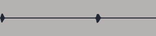
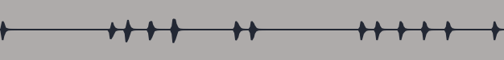
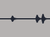

Transport Sync
This beat is composed of 3 independent Players each with a different loop length, synced to the Transport to start at different times and different offsets. The players stay synchronized to the position and offset of the Transport.


